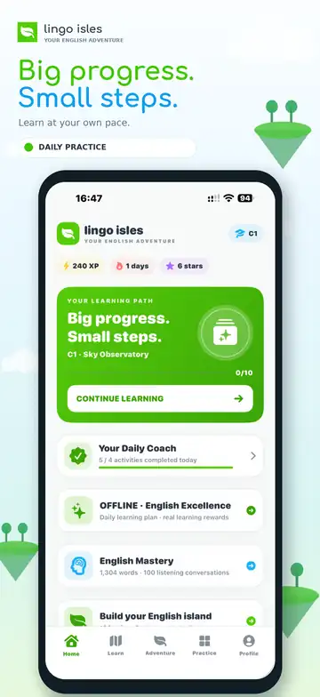
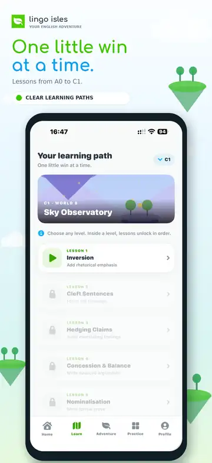
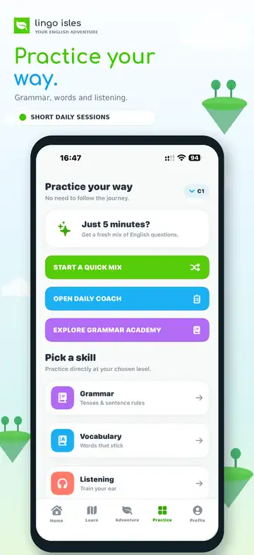
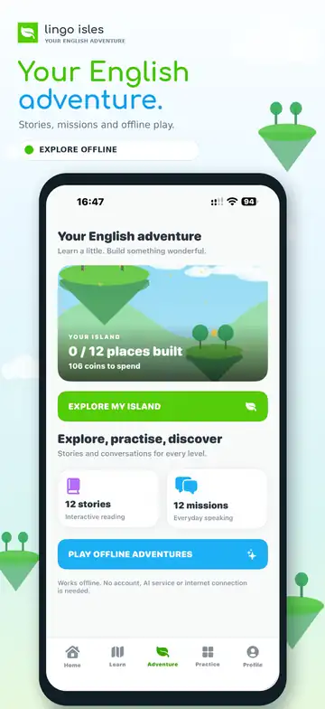
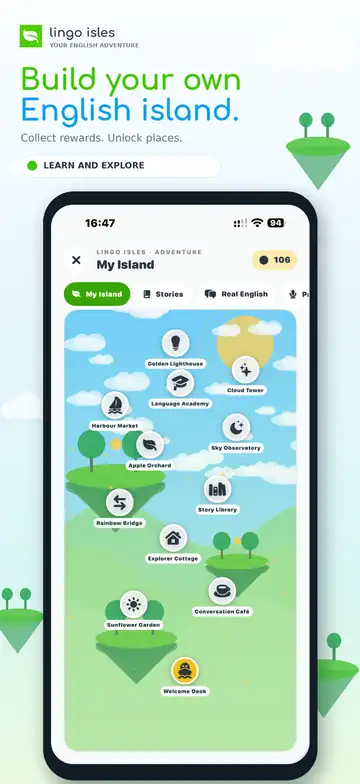

Learning English,
your own way.
Lingo Isles is an English-learning app I developed around short practice sessions, a visual learning journey and rewarding offline activities. A native iOS product combining curriculum design with a playful, island-based interface.

Source-verified project scope
A curriculum designed to keep learners progressing.
The version 6.3.2 source package contains the following content records. Figures below describe bundled resources; they are not user numbers, learning outcomes or independent release-test results.
Product design
Explore the interface.
Five original promotional screenshots supplied from the application project. The design uses floating islands, high-contrast action buttons, reward systems and distinct activities for different learning styles.




Product engineering
More than an interface.
The codebase includes dedicated learning stores, versioned local content, audio components and optional account-independent services.
Offline-first curriculum
Bundled JSON learning resources and locally stored progress support lessons without an account or an external AI service.
Rewards and progression
XP, streaks, coins and island building connect practice with a visible sense of progression.
Multiple ways to learn
Grammar, vocabulary, listening, focused exercises, stories and branching missions in one experience.
On-device audio features
AVFoundation supports spoken examples and a local pronunciation recording/playback activity.
Optional iCloud sync
CloudKit-based manual save, restore and deletion flows are present in the source; production validation is still needed.
AI-assisted development
AI tools supported parts of the software-development workflow. The app's lessons themselves do not require a conversational AI model.
Technology & architecture
- Native iOS interface: SwiftUI
- Structured content: bundled versioned JSON
- Local progress and state: model/store layer and UserDefaults
- Speech and recording: AVFoundation
- Optional backup: private CloudKit database
- Optional adult newsletter signup: external HTTPS form
Public repository & quality controls
The full Xcode source, proprietary educational content and service configuration remain private. The portfolio documentation describes the system and its design decisions without exposing the commercial project.
Release transparency